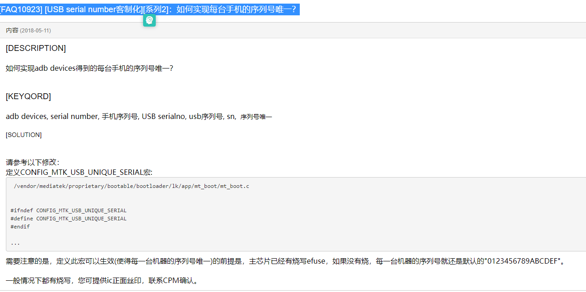
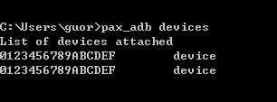

简述
Android出厂唯一serialno分析
参考

概述
在无SN的情况下，执行pax_adb devices命令，多台M8等机型获取的device ID是一样的，这就导致工厂在资源包下载、应用下载的时候不支持一拖多，效率很低，现在很多项目都已经修改了软件，支持无SN的情况下，多台终端获取ID不一样，如A930等，麻烦后续版本增加支持，对生产至关重要，谢谢！

1.目前
pax_adb devices指令获取的序列号是如下属性定义的，在mtk平台就是写serialno。
gPAYPHONEM50:/ $ getprop | grep 9HJJDADU7PPFDYU8
[ro.boot.bt.serialno]: [9HJJDADU7PPFDYU8]
[ro.boot.serialno]: [9HJJDADU7PPFDYU8]
[ro.serialno]: [9HJJDADU7PPFDYU8]
[ro.vendor.pax.fac.sn]: [9HJJDADU7PPFDYU8]
代码修改
vendor/mediatek/proprietary/bootable/bootloader/lk/app/mt_boot/mt_boot.c:
--- a/vendor/mediatek/proprietary/bootable/bootloader/lk/app/mt_boot/mt_boot.c
+++ b/vendor/mediatek/proprietary/bootable/bootloader/lk/app/mt_boot/mt_boot.c
@@ -236,6 +236,7 @@ static uint8_t AB_retry_count;
*/
/* The following option should be defined in project make file. */
#define SERIAL_NUM_FROM_BARCODE
+#define CONFIG_MTK_USB_UNIQUE_SERIAL
@@ -2013,9 +2022,11 @@ static inline int read_product_usbid(char *serialno)
key = (key << 32) | (unsigned int)get_devinfo_with_index(
12 + i * 2); /* 12, 14 */
- if (key != 0) {
+ if (key != 0) {
+ pal_log_err("Set serial # key: %d chip_code: %d serial_num:%s\n", errcode,chip_code,serial_num);
get_serial(key, chip_code, serial_num);
ser_len = strlen(serial_num);
+ pal_log_err("Set serial # serial_num:%s\n", serial_num);
} else {
ser_len = strlen(DEFAULT_SERIAL_NUM);
memcpy(serial_num, DEFAULT_SERIAL_NUM, ser_len);
@@ -2051,15 +2062,7 @@ static void set_serial_num(void)
sn_buf[len] = '\0';
}
-#ifdef CONFIG_MTK_USB_UNIQUE_SERIAL
- int errcode = read_product_usbid(sn_buf);
- if (errcode)
- pal_log_err("Set serial # from efuse. error: %d\n", errcode);
- len = strlen(sn_buf);
- len = (len < SN_BUF_LEN) ? len : SN_BUF_LEN;
- sn_buf[len] = '\0';
-#endif // CONFIG_MTK_USB_UNIQUE_SERIAL
-
+// [NEW FEATURE]-BEGIN by wugangnan@paxsz.com 2021-03-03, add default random sereialno by hash the key with chip id
#ifdef SERIAL_NUM_FROM_BARCODE
len = (unsigned int)read_product_info(sn_buf, pn_buf); // sn_buf[] may be changed.
if (len == 0) {
@@ -2070,8 +2073,21 @@ static void set_serial_num(void)
len = (len < SN_BUF_LEN) ? len : SN_BUF_LEN;
sn_buf[len] = '\0';
#endif // SERIAL_NUM_FROM_BARCODE
+ pal_log_err("Serial #1: \"%s\"\n", sn_buf);
+
+#ifdef CONFIG_MTK_USB_UNIQUE_SERIAL
+ if (!strcmp(DEFAULT_SERIAL_NUM, sn_buf)) {
+ int errcode = read_product_usbid(sn_buf);
+ if (errcode)
+ pal_log_err("Set serial # from efuse. error: %d sn_buf = %s\n", errcode,sn_buf);
+ len = strlen(sn_buf);
+ len = (len < SN_BUF_LEN) ? len : SN_BUF_LEN;
+ sn_buf[len] = '\0';
+ }
+#endif // CONFIG_MTK_USB_UNIQUE_SERIAL
+// [NEW FEATURE]-END by wugangnan@paxsz.com 2021-03-03, add default random sereialno by hash the key with chip id
- //pal_log_err("Serial #: \"%s\"\n", sn_buf);
+ pal_log_err("Serial #2: \"%s\"\n", sn_buf);
实现原理
原理就是根据chipid，然后对chip id进行hash处理，得到随机的字母排序serialno,需要注意的是，serialno原本定义了
SERIAL_NUM_FROM_BARCODE，是使用proinfo分区的barcode字段，这个需要先处理，逻辑应该是barcode为空，我们才使用随机serialno，否则使用barcode。
* #ifdef CONFIG_MTK_USB_UNIQUE_SERIAL
* read_product_usbid(sn_buf);
* get_serial(key, chip_code, serial_num);
* u16 hashkey[4];
* hashkey[idx] = (hashkey[idx] >> digit) | (hashkey[idx] << (16 - digit)); //digit就是chip_code，6765，hash the key with chip id
* ser[ser_idx++] = (char)(hashkey[idx] & 0x001f);
具体hash代码：
#ifdef CONFIG_MTK_USB_UNIQUE_SERIAL
static inline int read_product_usbid(char *serialno)
{
u64 key;
u32 hrid_size, ser_len;
u32 i, chip_code, errcode = 0;
char *cur_serialp = serialno;
char serial_num[SERIALNO_LEN];
/* read machine type */
chip_code = board_machtype();
/* read hrid */
hrid_size = get_hrid_size();
/* check ser_buf len. if need 128bit id, should defined into cust_usb.h */
if (SN_BUF_LEN < hrid_size * 8) {
hrid_size = 2;
errcode = 1;
}
for (i = 0; i < hrid_size / 2; i++) {
key = get_devinfo_with_index(13 + i * 2); /* 13, 15 */
key = (key << 32) | (unsigned int)get_devinfo_with_index(
12 + i * 2); /* 12, 14 */
if (key != 0) {
pal_log_err("Set serial # key: %d chip_code: %d serial_num:%s\n", errcode,chip_code,serial_num);
get_serial(key, chip_code, serial_num);
ser_len = strlen(serial_num);
pal_log_err("Set serial # serial_num:%s\n", serial_num);
} else {
ser_len = strlen(DEFAULT_SERIAL_NUM);
memcpy(serial_num, DEFAULT_SERIAL_NUM, ser_len);
errcode = 2;
}
/* copy serial from serial_num to sn_buf */
memcpy(cur_serialp, serial_num, ser_len);
cur_serialp += ser_len;
}
cur_serialp = '\0';
return errcode;
}
#endif
#if defined(CONFIG_MTK_USB_UNIQUE_SERIAL) || (defined(MTK_SECURITY_SW_SUPPORT) && defined(MTK_SEC_FASTBOOT_UNLOCK_SUPPORT))
static char udc_chr[32] = {"ABCDEFGHIJKLMNOPQRSTUVWXYZ456789"};
int get_serial(u64 hwkey, u32 chipid, char ser[SERIALNO_LEN])
{
u16 hashkey[4];
u32 idx, ser_idx;
u32 digit, id;
u64 tmp = hwkey;
memset(ser, 0x00, SERIALNO_LEN);
/* split to 4 key with 16-bit width each */
tmp = hwkey;
for (idx = 0; idx < ARRAY_SIZE(hashkey); idx++) {
hashkey[idx] = (u16)(tmp & 0xffff);
tmp >>= 16;
}
pal_log_err("get_serial # hashkey[0]=0x%x hashkey[1]=0x%x hashkey[2]=0x%x hashkey[3]=0x%x \n", hashkey[0],hashkey[1],hashkey[2],hashkey[3]);
/* hash the key with chip id */
id = chipid;
for (idx = 0; idx < ARRAY_SIZE(hashkey); idx++) {
digit = (id % 10);
hashkey[idx] = (hashkey[idx] >> digit) | (hashkey[idx] << (16 - digit));
id = (id / 10);
}
pal_log_err("get_serial # hashkey[0]=0x%x hashkey[1]=0x%x hashkey[2]=0x%x hashkey[3]=0x%x \n", hashkey[0],hashkey[1],hashkey[2],hashkey[3]);
/* generate serail using hashkey */
ser_idx = 0;
for (idx = 0; idx < ARRAY_SIZE(hashkey); idx++) {
ser[ser_idx++] = (char)(hashkey[idx] & 0x001f);
pal_log_err("ser[%d]=%d %d\n", ser_idx - 1,ser[ser_idx - 1],hashkey[idx] & 0x001f);
ser[ser_idx++] = (char)((hashkey[idx] & 0x00f8) >> 3);
pal_log_err("ser[%d]=%d %d\n", ser_idx - 1,ser[ser_idx - 1],(hashkey[idx] & 0x00f8) >> 3);
ser[ser_idx++] = (char)((hashkey[idx] & 0x1f00) >> 8);
pal_log_err("ser[%d]=%d %d\n", ser_idx - 1,ser[ser_idx - 1],(hashkey[idx] & 0x1f00) >> 8);
ser[ser_idx++] = (char)((hashkey[idx] & 0xf800) >> 11);
pal_log_err("ser[%d]=%d %d \n", ser_idx - 1,ser[ser_idx - 1],(hashkey[idx] & 0xf800) >> 11);
}
for (idx = 0; idx < ser_idx; idx++){
ser[idx] = udc_chr[(int)ser[idx]];
pal_log_err("final ser[%d]=%d \n", idx,ser[idx]);
}
ser[ser_idx] = 0x00;
return 0;
}
#endif /* CONFIG_MTK_USB_UNIQUE_SERIAL */
具体打印如下：
[1806] begin read proinfo
[1807] [PROFILE] mmc read 1 blks in 0 ms: 8KB/s
[1808] [LK_BOOT] Load 'proinfo' partition to 0x48191a44 (512 bytes in 1 ms)
[1809] get serialno from proinfo: ""
[1809] get PN from proinfo: ""
[1810] Serial #1: "0123456789ABCDEF"
[1810] Set serial # key: 1 chip_code: 6765 serial_num:>-
[1811] get_serial # hashkey[0]=0x27e9 hashkey[1]=0xc0e8 hashkey[2]=0xbe97 hashkey[3]=0x30fd
[1812] get_serial # hashkey[0]=0x493f hashkey[1]=0xa303 hashkey[2]=0x2f7d hashkey[3]=0xf4c3
[1813] ser[0]=31 31
[1813] ser[1]=7 7
[1814] ser[2]=9 9
[1814] ser[3]=9 9
[1814] ser[4]=3 3
[1814] ser[5]=0 0
[1815] ser[6]=3 3
[1815] ser[7]=20 20
[1815] ser[8]=29 29
[1815] ser[9]=15 15
[1816] ser[10]=15 15
[1816] ser[11]=5 5
[1816] ser[12]=3 3
[1817] ser[13]=24 24
[1817] ser[14]=20 20
[1817] ser[15]=30 30
[1817] final ser[0]=57
[1818] final ser[1]=72
[1818] final ser[2]=74
[1818] final ser[3]=74
[1819] final ser[4]=68
[1819] final ser[5]=65
[1819] final ser[6]=68
[1820] final ser[7]=85
[1820] final ser[8]=55
[1820] final ser[9]=80
[1821] final ser[10]=80
[1821] final ser[11]=70
[1821] final ser[12]=68
[1822] final ser[13]=89
[1822] final ser[14]=85
[1822] final ser[15]=56
[1823] Set serial # serial_num:9HJJDADU7PPFDYU8
[1823] Set serial # from efuse. error: 1 sn_buf = 9HJJDADU7PPFDYU8
[1824] Serial #2: "9HJJDADU7PPFDYU8"